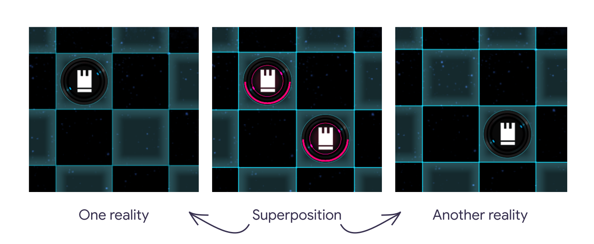
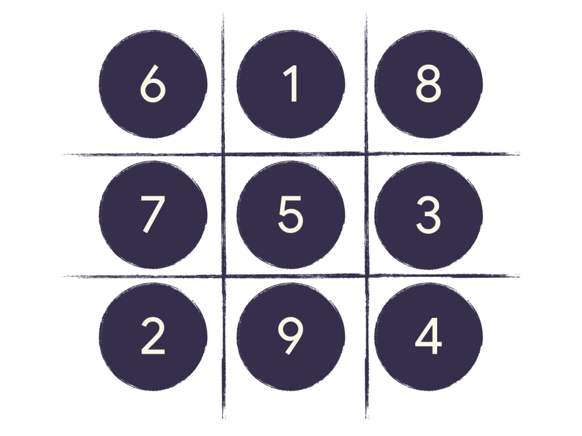
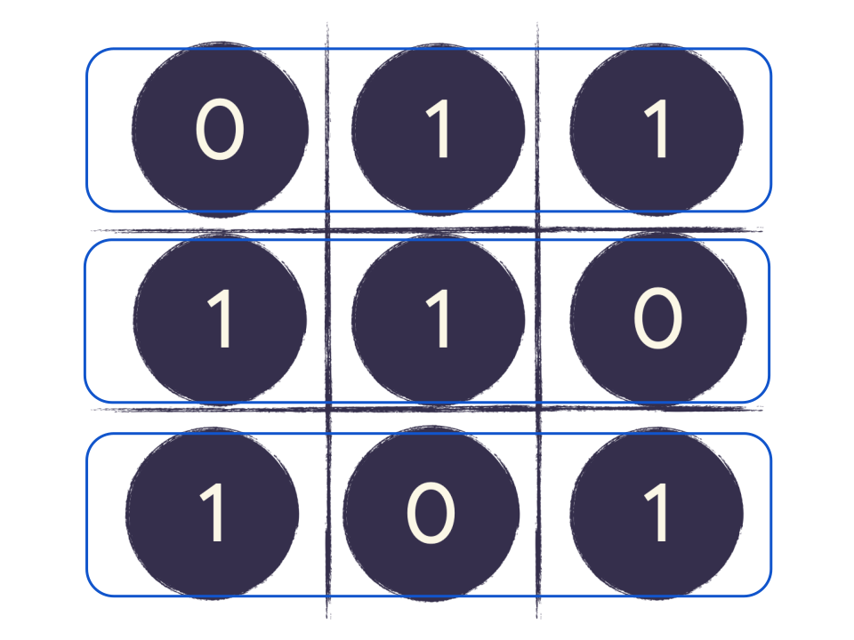
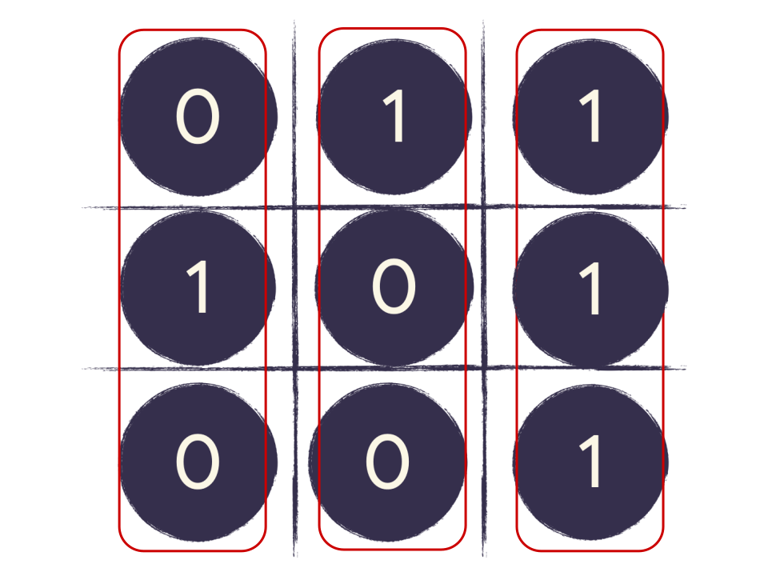
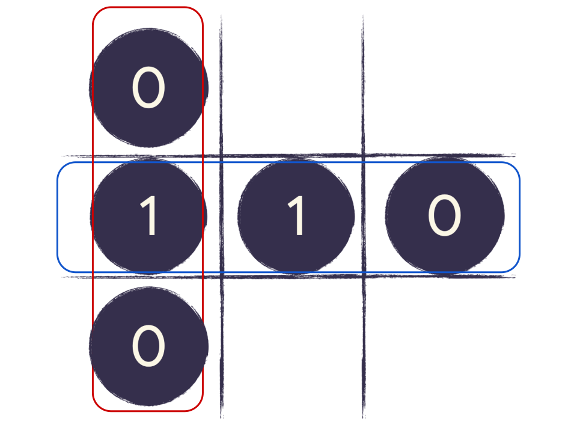
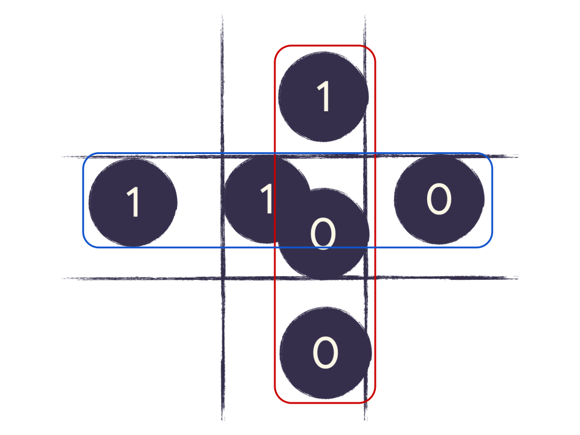
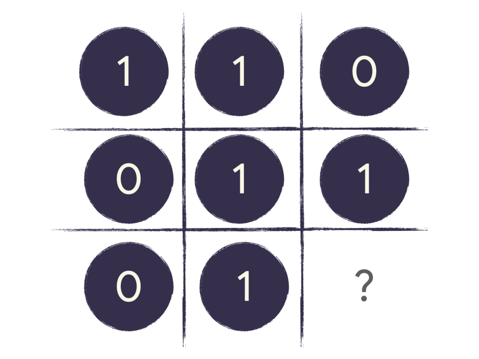
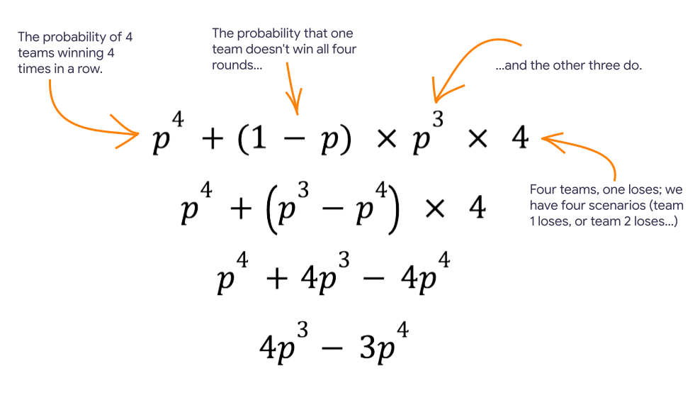

The word Quantum is a label for the rules that describe all behavior in the universe, so far as humanity knows.
Often, the conversation about quantum rules starts with a lot of imagination and mathematics. The lesson plans on this page offer a different approach. We hope that you can use them to help your students build an intuition about two fundamental concepts in modern quantum physics:
- Quantum superposition: a property of quantum objects that allows them to exist in multiple states, or universes, at the same time.
- Quantum entanglement: the ability to link two or more quantum objects in a way that transcends space and time.
Those concepts describe the world around us, but they've been hidden from us until recently. Researchers at labs around the world are now learning how to create and wield quantum phenomena at our everyday, macroscopic scales. This work is the foundation for a new kind of super-powerful computer: a quantum computer.
The activities are independent, so you can use either activity, or both, in any order. We recommend that you start with the Quantum Chess puzzles.
Teachers: View Lessons (below)Students: Play Quantum puzzles
Learning objectives
Our target audience is high school students and advanced middle schoolers. Teachers of other grades might be able to adapt the material to their needs.
After these activities students should be able to design simple strategies that use quantum superposition and quantum entanglement to win simple games and puzzles.
For more information about alignment with the Next Generation Science Standards, see the Standards alignment section below.
Lesson: Quantum Chess
The Quantum Chess puzzle activity helps students build an intuition about quantum information science concepts. The chess board gives students a physical object that they can imagine while trying to understand the different states quantum objects can be in, the probabilities associated with those states, and the complex interactions between states.
Use this activity to ground your discussion about how information is encoded, stored, processed, and transmitted in a quantum system.
Run this activity
- Share the link to the guided Quantum Chess puzzles with your students.
- Present the slides.
- Choose a conclusion (info and slides in Quantum connection below).
Agenda
You can adjust the timing of the agenda as needed to suit your class schedule.
- Introduction: (5 mins) - This activity demonstrates the power of two important concepts in Quantum physics: quantum superposition and quantum entanglement. These two concepts are believed to be responsible for everything that exists in the universe, including all of space and time.
- Play the game: (30 min) - Students are led through a series of chess puzzles by an animated, in-game character.
- Strategy reflection: (5-10 min) - Reflect with the students on how this game is different from other turn-based board games they might have played. How might they use superposition and entanglement to create winning scenarios?
- Quantum connection: (10-15 min) - Students can engage with your choice of a video that presents some amazing, real world applications of quantum computers.
| Section | Time (minutes) | Description |
|---|---|---|
| Introduction | 5m | This activity demonstrates the power of two important concepts in Quantum physics: quantum superposition and quantum entanglement. These two concepts are believed to be responsible for everything that exists in the universe, including all of space and time. |
| Play the game | 30m | Students are led through a series of chess puzzles by an animated, in-game character. |
| Strategy reflection | 5-10m | Reflect with the students on how this game is different from other turn-based board games they might have played. How might they use superposition and entanglement to create winning scenarios? |
| Quantum connection | 10-15m | Students can engage with your choice of a video that presents some amazing, real world applications of quantum computers. |
Overview for the instructor
Chess has a reputation for being a game played by elite intellectuals. This activity uses the chess board as a tool to help students build intuition about otherwise abstract concepts. For the purpose of this activity, think of the chess board and pieces as just common, physical objects. The chess pieces move on the board according to a simple set of rules.
We hope that the students can imagine themselves touching the chess pieces. We use this sense of cognitive embodiment to support the idea that a system can be in more than one state with some probability. Rather than imagine a single board, ask your students to imagine multiple boards where a single piece can occupy a different square on each board.
The animated character in the activity (Sphero )introduces the chess board and some basic moves. Sphero goes on to present a set of puzzles, where the students need to move a small set of chess pieces on a small region of the board, for a specific objective (capture, help your piece escape capture, and so on).
The puzzles offer an opportunity to enable students to consider the principles of quantum mechanics in an intuitive way. Almost everyone finds the mathematics of quantum mechanics unintuitive, at first. For those who go on to study quantum mechanics more deeply, we hope that the intuition that they build with this activity could provide a stronger foundation on which to build more thorough knowledge about the mathematics that define quantum mechanics. We hope that this activity makes their journey simpler and easier.
Introduction
You can use this script before the first lesson:
Today we are going to explore an exciting branch of physics called Quantum physics. Quantum physics usually deals with things that are very very small, like particles and atoms. This level is called the Quantum Realm. It's not a different place; it's a different way of looking at why things are the way that they are. Things are different down at that level.
One amazing aspect of the Quantum Realm is that it predicts the existence of many parallel universes, where things can be very different from our universe. For example, there may be a universe in which dinosaurs still roam the Earth, or even ones in which time travel and teleportation have already been developed.
The idea that we may be living in just one of many universes - a multiverse - may sound unbelievable, like something out of science fiction. Still, it’s something that many quantum physicists believe to be true, and are currently researching.
If you’ve heard of the Marvel superhero Ant Man, then you’ve already been introduced to the Quantum Realm! Ant Man wears a special suit that allows him to enter the Quantum Realm and harness its power.
In fact, scientists at universities like Caltech and companies like Google, are looking for ways to manifest the powers of the Quantum Realm at the human scale. This would open a world of possibilities for the future of science and humanity, and we’re going to learn more about it!
Today our goal is to understand the power of two important concepts in Quantum physics: quantum superposition and quantum entanglement. These two concepts are responsible for everything we see in the Quantum Realm.
Raise your hand if you have played chess before or seen Queen’s Gambit? We are going to see the power of superposition and entanglement through a set of chess puzzles that you can explore on your own. It's a version of chess with a Quantum twist!
Through the game we will learn more about how things work in the Quantum Realm. We will learn about a concept called quantum superposition, which is when something can exist in multiple places at the same time. We will also learn about another amazing power hiding within the quantum realm: quantum entanglement. Quantum entanglement is so powerful, it is thought to connect all of space and time, including how the multiverse itself is stitched together.
When you go to this link on your device, you will be directed through a series of puzzles. These puzzles apply the laws of quantum physics to the classic game of chess. You don’t need to know how to play chess to enjoy the game.
Play the game
Strategy reflection
One of the core activities of quantum information scientists is to uncover and express the behaviors of systems in terms of quantum physics. A quantum chemist might look at the electric structure of atoms and molecules and try to describe them in terms of possible realities that interact with each other. If they're successful, they can program a quantum computer (when they become more useful) to do things like create new proteins and predict the result of complex chemical reactions.
The Quantum Chess puzzles prompt students to start building this habit of thinking about systems in terms of their possible states, and how those states depend on each other. Puzzles 7 through 11, in particular, encourage students to explore the interactions of multiple realities.
The strategy to solve these puzzles depends on students acquiring some familiarity with the quantum "moves" used in the puzzles:
| Move | Description |
|---|---|
| Split | Put a piece in quantum superposition. In isolation, you can think of a piece in superposition as a single piece
on different squares on different boards (realities). A single split would create two boards, each with 50%
probability of being the board in your reality. If you split one of your two pieces again, you would have three
boards (realities):
|
| Entanglement | The simplest way to create quantum entanglement is to move a piece through another piece that is in
superposition. In this case your piece is entangled with the other piece, which means that the fate of your piece
depends on the state of the other piece. If you are in the reality where the piece was in your way, your piece
didn't move, and vice versa. Again, this should prompt some reflection about:
|
| Measurement | Two pieces of different types can't occupy the same square. If you move your piece into the same square as a different piece, you force the game to measure the state of that square. Measurement tells you which realities are compatible with the outcome observed. In the game, this eliminates some, or most, of the possible realities (depending on their relationships). |
Puzzles 10 and 11 are great examples of how some choices about the system drive very different outcomes. In both puzzles the same initial move yields very different possible outcomes, depending on the King's response.
The near King (square F1), cannot take the Rook under any circumstances. In mathematical terms, there is a zero percent chance of success. Why? For the Rook to land on square G1, it would need to pass through the square F1. If the King were on square F1, the Rook would not have moved. So, the Rook on G1 is entangled with the King on F1 (we've created one of the four Bell states).
However, that doesn't guarantee success for the King on square H1. Since the King is in superposition, the system has two possible states. If the King from H1 tries to capture the Rook on G1, we trigger our Measurement rule (two different pieces try to occupy the same square). If the King is truly on H1, then:
- The King was not on square F1.
- The Rook passed through square F1 to reach G1.
- The King captures G1 from H1.
However, the measurement could have told us that we were in the other reality, where the King was on F1. In this case, the Rook never reached G1, so the Rook is safe.
While Quantum Chess is just a game, it enables the player to start building intuition about quantum behaviors that one can go on to apply in other contexts.
All done? Jump to Quantum connection to conclude your class.
Lesson: Zeros and Ones
Zeros and Ones (a quantum Magic Square game) offers students a chance to understand the limitations of classical physics, and improve their chances at winning a game by using Quantum Information Science as an analytic tool. This activity highlights the limitations of classical systems analysis.
Run this activity
- Before class: print game sheets.
- Project the presentation slides.
- Play the pre-recorded facilitator (slide 3).
- Choose a conclusion (below).
Agenda
You can adjust the timing of the agenda as needed to suit your class schedule.
- Introduction: (5 mins) - See language provided on our Quantime website.
- Play the game: (25 min) - An engaging full-class activity that builds excitement around quantum and fosters collaboration among students.
- Strategy reflection: (5-10 min) - Students explore the best classical strategy to win the game. They learn that winning the game becomes exponentially harder with each additional round.
- Quantum connection: (10-15 min) - Students 1.) revisit the Zeros and Ones game through an animation that recasts the game’s strategy in a quantum light, and 2.) a video presenting some of the amazing, real world applications of quantum computers.
| Section | Time (minutes) | Description |
|---|---|---|
| Introduction | 5m | This activity demonstrates the power of two important concepts in Quantum physics: quantum superposition and quantum entanglement . These two concepts are be responsible for everything we see in the Quantum Realm. |
| Play the game | 25m | An engaging full-class activity that builds excitement around quantum and fosters collaboration among students. |
| Strategy reflection | 5-10m | Students explore the best classical strategy to win the game. They learn that winning the game becomes exponentially harder with each additional round. |
| Quantum connection | 10-15m | Students 1.) revisit the Zeros and Ones game through an animation that recasts the game’s strategy in a quantum light, and 2.) a video presenting some of the amazing, real world applications of quantum computers. |
Overview for the instructor
In a standard Magic Square game, a player is given 9 numbers and a 3 by 3 grid. The task is to fill in the grid with the numbers so that all rows, columns, and diagonals sum to a single number. Solutions exist to solve the Magic Square.
In the Quantum Magic Square game, the goal is for two groups to coordinate the placement of the numbers 1 and 0 in their column and row, in a pattern so that both groups choose the same number where the one's row and the other's column intersect.
The Blue group must populate the rows of the grid with an even number of ones. The Red group must populate the columns with an odd number of Zeros.
|

Three rows that meet the requirements for Zeros and Ones: 011, 110, 101.
|

Three columns that meet the requirements for Zeros and Ones: 010, 100, 111.
|

A pair of rolling dice
|
|
|

A winning play for the team, where the second row and first column were assigned. The Blue group chose 110, and the Red group chose 010. The row and column both have the number 1 at the intersection
|

A losing play for the team, where the second row and second column were assigned. The Blue group chose 110 and the Red group chose 100. The row and column have different numbers at the intersection.
|
The dice introduce an element of chance that makes the Zeros and Ones game unwinnable if the game is played repeatedly.
However, if the students had access to a quantum system (like a quantum computer, or some other kind of "entangled qubit"), the quantum magic square game is winnable every time.
In this game, the class divides into four teams, each with two groups. A pre-recorded facilitator guides the entire class through the process.
Introduction
You can use this script before the first lesson:
Today we are going to explore an exciting branch of physics called Quantum physics. Quantum physics usually deals with things that are very very small, like particles and atoms. This level is called the Quantum Realm. It's not a different place; it's a different way of looking at why things are the way that they are. Things are different down at that level.
One amazing aspect of the Quantum Realm is that it predicts the existence of many parallel universes, where things can be very different from our universe. For example, there may be a universe in which dinosaurs still roam the Earth, or even ones in which time travel and teleportation have already been developed.
The idea that we may be living in just one of many universes - a multiverse - may sound unbelievable, like something out of science fiction. Still, it’s something that many quantum physicists believe to be true, and are currently researching.
If you’ve heard of the Marvel superhero Ant Man, then you’ve already been introduced to the Quantum Realm! Ant Man wears a special suit that allows him to enter the Quantum Realm and harness its power.
In fact, scientists at universities like Caltech and companies like Google, are looking for ways to manifest the powers of the Quantum Realm at the human scale. This would open a world of possibilities for the future of science and humanity, and we’re going to learn more about it!
If this is their first lesson, you can continue:
Today our goal is to understand the power of two important concepts in Quantum physics: quantum superposition and quantum entanglement . These two concepts are be responsible we see in the Quantum Realm. We’re going to start by playing a game together. It’s a fairly simple game called Zeroes and Ones. I’m going to play a video so all you need to do is follow along.
If they’ve already done the chess puzzles lesson, you can continue:
In the previous lesson, you learned about quantum superposition and quantum entanglement through the game of quantum chess. Remember: quantum superposition is when something can exist in multiple states at the same time. Today we are going to continue to see the power of superposition and entanglement through another game that we’re all going to play together.
Play the game
Before you begin: Print at least one set of game play sheets for each team.
The pre-recorded facilitator leads the class through the following steps:
Strategy reflection
Jump to the:
To win the game, every row needs an even number of 1s and every column needs an odd number of 1s. However, there's always one square that can't be filled in without breaking the rules. This means that there is only an 8/9 chance of winning any given round, or about 89%.
We can write the probability for any one team winning four rounds in a row:
Or, more generally, for winning n games in a row:
Now we can write the probability of at least three groups winning all four rounds:
Earlier, we calculated that the probability of winning all four rounds was $$\left( \frac{8}{9} \right)^4$$, so substituting that into our equation:
As we build machines that enable us to engage with the quantum realm, like quantum computers, we can play this game in a way where we win 100% of the time. For this game, we need a device with six qubits that we can entangle.
This video following video describes how we can use these qubits to win the game.
Quantum connection
Below are some suggested resources that you can use to close your lesson:
Practical applications
This outro is about connecting the quantum concepts the students learned about to the real world. Before leading this workshop, feel free to watch all of the videos and decide which would be most appropriate for your class, or ask the class to choose! We love them all so we couldn’t choose just one!
- What if we had working quantum computers today? (5:03)
- Quantum Computers Explained - Limits of Human Technology (6:45, can start at 3:45 if too long)
- How Quantum Computing Will Change the World (3:37)
Quantum in Hollywood
This video pits actor Paul Rudd (Marvel’s Ant Man) against theoretical physicist Stephen Hawking playing each other in an epic game of quantum chess.
This video can be watched after either lesson but we recommend showing it after the students have been introduced to the chess puzzles. It’s a bit long but serves as a fun note to end on. If there is not enough time, we recommend sending the link home with your students so they can watch it on their own time!
If the students are not familiar with Ant Man, explain that he is a Marvel superhero that has a special suit that makes him extremely tiny, allowing him to enter a tiny universe called the Quantum Realm. If the students are not familiar with Stephen Hawking, explain that he is a famous theoretical physicist, who tried to figure out the Theory of Everything - how gravity works at the quantum level.
Find out more
Our classroom time with quantum physics is coming to an end but hopefully this was an exciting introduction to the quantum world.
There is so much more to learn about this topic that we weren’t able to cover in this lesson. The study of quantum physics is vast and ever-growing, and if you’d like to continue your journey with it, there are many ways:
- Explore the Quantum Chess playground
- Learn More about Quantum Science:
- Play more quantum chess (either website or give access to quantum realm version)
- On the same website that we used to play the quantum chess puzzles , you can find more resources to learn about quantum science.
Standards alignment
For teachers in the United States, you should find that these lessons align with the Next Generation Science Standards :
- MS-PS4-3: Integrate qualitative scientific and technical information to support the claim that digitized signals are a more reliable way to encode and transmit information than analog signals.
- HS-PS4-2: Evaluate questions about the advantages of using digital transmission and storage of information.
- HS-PS4-5: Communicate technical information about how some technological devices use the principles of wave behavior and wave interactions with matter to transmit and capture information and energy.
Both lessons aim to help students build an intuition about using quantum systems to reason about the encoding and transmission of digital information.